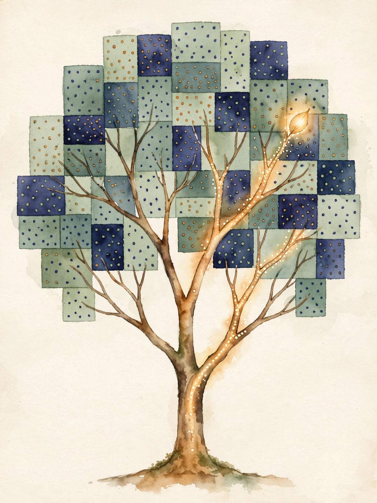

Narrated from the lesson document · no lecture transcript exists
One tree asks yes-or-no questions down a staircase of fences. Many trees vote. This companion walks the full arc of Unit 07: decision regions, impurity, splits, pruning, bagging, variance reduction, random forests, boosting, the residual view, imbalance, importance limits, and baselines.
From the lesson The idea, and every number beside it, comes from the cited section of the lesson file lessons/u07/lesson-07-trees-ensembles.md. The phrasing is the companion's.
Illustration Invented by the companion: an analogy, a toy with made-up values, or a what-if. Never lesson content.
companion Companion voice: the idea above the tag is from the lesson. The generalization below it is the companion's.
Provenance: the lesson is locally authored. It does not reproduce an instructor lecture, and it carries no transcript. All claim classes are lesson-local.

Section 1 · C01
From the lessonC01
A tree is axis-aligned fences plus a lookup. Prediction is a walk down the fences, then a vote. New point (0.9, 0.1): x1 greater than 0.5, x2 at most 0.5, vote 1. Point (0.1, 0.9): x1 at most 0.5, vote 0. A diagonal true boundary needs many rectangles: the fence language is powerful but boxy.
Section 2 · C02
From the lessonC02
The toy node holds counts [4, 1]: four of class 0, one of class 1. Impurity is the error rate of a lazy rule that labels a random point by the node class distribution. Gini: 1 - sum p². Entropy: -sum p log p in nats. Misclassification: 1 - max p.
From the lessonC02
Computed numbers, 2026-10-06. Node [4,1]: p = [0.8, 0.2]. Gini = 1 - (0.64 + 0.04) = 0.32. Entropy = -(0.8 ln 0.8 + 0.2 ln 0.2) = 0.5004. Misclassification = 0.2. Node [2,3]: Gini 0.48, entropy 0.6730. Pure node [5,0]: 0.0 for all three. Balanced [3,3]: Gini 0.5, entropy 0.6931, misclassification 0.5.
From the lessonC02
The failure case: a node [100, 1] has Gini 0.0198. A split that isolates the single minority point gains 0.0198 and looks useless, yet that point may be the whole signal. Impurity is blind to class value.
From the lessonC02 Impurity bench: enter class counts. The widget computes all three measures with the lesson's formulas.
n0: n1:
Gini = 1 - sum p². Entropy in nats. Misclassification = 1 - max p.
| Node | Gini | Entropy (nats) | Misclassification |
|---|---|---|---|
| [4, 1] | 0.32 | 0.5004 | 0.2 |
| [2, 3] | 0.48 | 0.6730 | not given |
| [5, 0] | 0.0 | 0.0 | 0.0 |
| [3, 3] | 0.5 | 0.6931 | 0.5 |
Node [100, 1]: Gini 0.0198. The split that isolates the one minority point gains almost nothing, yet that point may be the whole signal.
Section 3 · C03
From the lessonC03
Computed numbers, 2026-10-06. Root Gini 0.5. Weighted Gini per threshold: 0.2 gives 0.4000, 0.35 gives 0.2500, 0.5 gives 0.0000, 0.7 gives 0.2500, 0.85 gives 0.4000. Gains: 0.1, 0.25, 0.5, 0.25, 0.1. Best: t = 0.5, gain 0.5, both children pure. Sort x once, sweep t over midpoints, track running class counts: O(1) per candidate after the O(n log n) sort.
Section 4 · C04
From the lessonC04
Computed numbers, 2026-10-06. Depth-1 stump: best t = 0.475, train error 0.125, validation error 0.25. Full memorization: train error 0.0, validation error 0.25. Alpha 0.05: depth-1 cost 0.125 + 0.05·2 = 0.225, depth-2 cost 0.0 + 0.05·4 = 0.2. Depth-2 wins. Alpha 0.1: 0.325 vs 0.4. The prune step cuts back to depth-1.
From the lessonC04
Alpha prices each leaf. Raise it and the tree shrinks. The validation error, not the train error, sets the price.
| Tree | Train error | Validation error |
|---|---|---|
| depth-1 stump, t = 0.475 | 0.125 | 0.25 |
| full memorization | 0.0 | 0.25 |
Alpha 0.05 keeps depth-2 (cost 0.2 beats 0.225). Alpha 0.1 prunes to depth-1 (0.325 beats 0.4). The price decides the tree.
Section 5 · C05
From the lessonC05
Computed sets, seed 7. Rep 0: [2, 2, 3, 3]. Rep 1: [0, 2, 3, 3]. Rep 2: [0, 1, 1, 3]. Point 0 misses rep 0. Point 1 misses rep 0. Point 2 misses rep 2. The chance a point misses a replicate is (1 - 1/6)⁶ = 0.3349. The missed points are the out-of-bag set of C07: free validation, no extra data.
Section 6 · C06
From the lessonC06
Computed numbers, 2026-10-06. rho = 0.3, B = 10: 0.3 + 0.07 = 0.37 against the single-model 1.0. Bagged deep trees, rho = 0.6, B = 100: 0.604. Random forest, rho = 0.2, B = 100: 0.208. The formula: variance scales as rho + (1 - rho)/B. More trees help only through the second term. Correlation sets the floor.
From the lessonC06 Averaging bench: set correlation rho and tree count B. The widget runs the lesson's variance formula.
rho: B:
Variance factor = rho + (1 - rho)/B. Single model = 1.0.
rho = 0.6 with 100 trees: 0.604. rho = 0.2 with 100 trees: 0.208. Same B, triple the gain, from decorrelation alone.
Section 7 · C07
From the lessonC07
Computed OOB table, 2026-10-06. Point 0: OOB reps [0], pred -1, true -1. Point 1: OOB reps [0,1], preds [-1,-1], vote -1, true -1. Point 2: OOB reps [2], pred +1, true +1. Point 3: no OOB reps, no prediction. OOB error 0.0 on the three predicted points. In-bag error of stump s0 alone: 0.25. The jury that never saw the point judges it honestly.
| Point | OOB reps | Vote | True |
|---|---|---|---|
| 0 | [0] | -1 | -1 |
| 1 | [0, 1] | -1 | -1 |
| 2 | [2] | +1 | +1 |
| 3 | none | no prediction | not given |
Section 8 · C08
From the lessonC08
Start w = [0.25, 0.25, 0.25, 0.25]. eps = 0.25. alpha = 0.5 ln 3 = 0.5493. Correct points: 0.25 e^-0.5493 = 0.1444 each. The missed point: 0.25 e^0.5493 = 0.4330. Sum 0.8661. Normalized: [1/6, 1/6, 1/6, 1/2]. The missed point now holds half the total weight. Computed 2026-10-06. The next stump must face the hard point.
One missed point goes from weight 0.25 to 0.5. The next weak learner has no choice but to study it.
Section 9 · C09
From the lessonC09
Update: F_m = F_{m-1} + nu·h_m, h_m fit to the residuals r. Computed numbers, 2026-10-06. Residuals [-1, 0, 1]: sum 0.0, variance 0.6667. Best stump splits at x = 0.5: left [-1] variance 0, right [0, 1] variance 0.25. Weighted: (1/3)(0) + (2/3)(0.25) = 0.1667. SSE falls from 2.0 to 3(0.1667) = 0.5 in one round. Gradient boosting is least squares on the leftovers.
Section 10 · C10
From the lessonC10
Computed numbers, 2026-10-06. All-negative rule: accuracy 0.95, recall 0.0, balanced accuracy 0.5. A real model with TP = 4, FP = 5, FN = 1: precision = 4/9 = 0.4444, recall = 4/5 = 0.8, F1 = 2(0.4444)(0.8)/1.2444 = 0.5714. Build the 2x2 table first, then read all four metrics off it. Never report accuracy alone on skewed data.
| Rule | Accuracy | Recall | Precision | F1 |
|---|---|---|---|---|
| all negative | 0.95 | 0.0 | not given | not given |
| real model | not given | 0.8 | 0.4444 | 0.5714 |
All-negative: accuracy 0.95, recall 0.0. The model learned nothing and scored an A.
Section 11 · C11
From the lessonC11
Computed check, 2026-10-06. Permute x1 across the four points: accuracy falls to 0.5. Permute x2: accuracy stays 1.0, because the tree never reads x2. Same data, opposite verdicts. Importance is a property of the fitted tree, not of the world. Permutation importance shuffles one column at a time on held-out data and records the score drop.
Permute x1: accuracy 0.5. Permute x2: accuracy 1.0. The tree ignored x2, so x2 looks unimportant. The world may disagree.
Section 12 · C12
From the lessonC12
Computed numbers, 2026-10-06. Majority, predict 0: accuracy 3/6 = 0.5. Stratified random: expected accuracy 0.5² + 0.5² = 0.5. Stump at t = 0.5: accuracy 6/6 = 1.0. The stump clears the bar by 0.5. Score the baseline on the same split with the same metric before fitting anything smart.
Majority 0.5, stratified 0.5, stump 1.0. The one-rule model is the bar every fancier model must clear.
Wisdom index